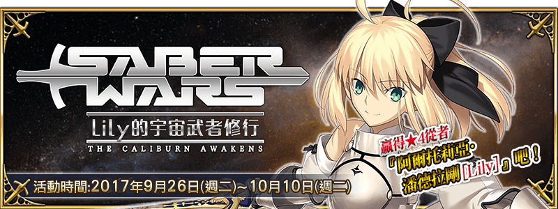
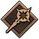
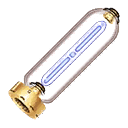

本頁面資訊僅供參考，實際情況請以遊戲內資料為準。
由於直接使用官方翻譯，可能會與其他站內翻譯相異，敬請見諒。
其他公告內容請參照日版當時公告翻譯。
- 主線關卡
-
EPISODE Ⅰ Lily的啟程 消耗AP 推薦Lv. 初次報酬 開放條件 5 12 9/26 13:00~10/10 12:59 〉 職階傾向 QP Exp 絆 
1,600 375 135 Wave 1 1  Lv.15 女主角X HP42,744
Lv.15 女主角X HP42,744掉落總合機率
(可能掉落箱數)100%(1) EPISODE Ⅱ 黑鬍子的覺醒 消耗AP 推薦Lv. 初次報酬 開放條件 5 15 9/26 13:00~10/10 12:59
通過：怪物來襲！ I〉 職階傾向 QP Exp 絆 


1,900 550 165 Wave 1 1  Lv.12 黑鬍子精英陸戰隊 HP1,630
Lv.12 黑鬍子精英陸戰隊 HP1,6302 Lv.12 黑鬍子精英陸戰隊 HP1,6303 Lv.12 黑鬍子精英陸戰隊 HP1,630Wave 2 1 Lv.12 黑鬍子精英陸戰隊 HP1,6302 Lv.12 黑鬍子精英陸戰隊 HP1,6303  Lv.20 海賊波貝 HP4,686
Lv.20 海賊波貝 HP4,686Wave 3 1 Lv.12 自動人偶．蘭布達 HP7,033 2  Lv.28 蒂奇 HP28,476
Lv.28 蒂奇 HP28,4763 Lv.12 自動人偶．蘭布達 HP7,033 掉落總合機率
(可能掉落箱數)2481003%(2) 500%(5) 100%(1) 100%(1) 197%(2) EPISODE Ⅲ 羅馬的復活 消耗AP 推薦Lv. 初次報酬 開放條件 5 18 9/26 13:00~10/10 12:59
通過：怪物來襲！ II〉 職階傾向 QP Exp 絆 

2,200 790 195 Wave 1 1 Lv.16 雙足飛龍．西格瑪 HP5,125Wave 2 1 Lv.16 雙足飛龍．西格瑪 HP5,1252 Lv.16 雙足飛龍．西格瑪 HP5,1253 Lv.16 雙足飛龍．西格瑪 HP5,125Wave 3 1 Lv.20 隨侍的巫女狐 HP14,046 2  Lv.22 旅途中的皇帝陛下 HP27,665
Lv.22 旅途中的皇帝陛下 HP27,6653  Lv.20 隨侍的夥伴 HP9,855
Lv.20 隨侍的夥伴 HP9,855掉落總合機率
(可能掉落箱數)482008%(4) 200%(2) 100%(1) 392%(4) EPISODE Ⅳ 向著宇宙的覺醒 消耗AP 推薦Lv. 初次報酬 開放條件 5 20 9/26 13:00~10/10 12:59
通過：怪物來襲！ III〉 職階傾向 QP Exp 絆 
2,400 955 215 Wave 1 1 Lv.18 混沌機械兵．德爾塔 HP6,021 2 Lv.18 混沌機械兵．德爾塔 HP6,021 3 Lv.18 混沌機械兵．德爾塔 HP6,021 Wave 2 1  Lv.12 隊長．尼古拉 HP25,536
Lv.12 隊長．尼古拉 HP25,5362  Lv.16 黃金．男孩 HP17,576
Lv.16 黃金．男孩 HP17,5763 Lv.26 蒸汽驅動戰士巴貝奇 HP18,940掉落總合機率
(可能掉落箱數)4102003%(3) 200%(2) 100%(1) 297%(3) EPISODE Ⅴ X的解答 消耗AP 推薦Lv. 初次報酬 開放條件 5 22 9/26 13:00~10/10 12:59
通過：EPISODE Ⅳ 向著宇宙的覺醒〉 職階傾向 QP Exp 絆 2,600 1,120 235 Wave 1 1 Lv.32 女主角Z HP101,376掉落總合機率
(可能掉落箱數)500100%(1) EPISODE Ⅵ 花之旅途 消耗AP 推薦Lv. 初次報酬 開放條件 5 24 9/26 13:00~10/10 12:59
通過：EPISODE Ⅴ X的解答〉 職階傾向 QP Exp 絆 2,800 1,300 255 Wave 1 1 Lv.20 女主角Z-A HP4,1692 Lv.20 女主角Z-B HP4,1693 Lv.20 女主角Z-C HP4,1694 Lv.20 女主角Z-D HP4,1695 Lv.20 女主角Z-E HP4,1696 Lv.20 女主角Z-F HP4,1697 Lv.20 女主角Z-G HP4,1698 Lv.20 女主角Z-H HP4,1699 Lv.40 超級女主角Z HP118,926掉落總合機率
(可能掉落箱數)1000800%(8) 100%(1) - 自由關卡
-
蒐集機材 初級 消耗AP 推薦Lv. 初次報酬 開放條件 20 20 9/26 13:00~10/10 12:59
通過：EPISODE Ⅵ 花之旅途∞ 職階傾向 QP Exp 絆 2,400 955 215 Wave 1 1 Lv.10 自動人偶 HP2,953 2 Lv.14 自動人偶．蘭布達 HP4,052 3 Lv.10 自動人偶 HP2,953 Wave 2 1 Lv.12 自動人偶．蘭布達 HP3,516 2 Lv.16 雙足飛龍 HP5,1253 Lv.10 自動人偶 HP2,953
Lv.12 自動人偶．蘭布達 HP3,516Wave 3 1 Lv.10 自動人偶 HP8,860 2 Lv.26 黑鬍子賓克斯 HP60,1603 Lv.16 雙足飛龍 HP15,375
Lv.12 自動人偶．蘭布達 HP10,549掉落總合機率
(可能掉落箱數)2421009.75%(8) 3%(2) 0.1%(1) 0.2%(1) 344.75%(4) 99.7%(1) 147%(2) 295.5%(4) 蒐集機材 中級 消耗AP 推薦Lv. 初次報酬 開放條件 25 30 9/26 13:00~10/10 12:59
通過：蒐集機材 初級∞ 職階傾向 QP Exp 絆 3,400 2,190 315 Wave 1 1 Lv.20 雙足飛龍 HP6,3222 Lv.22 雙足飛龍．西格瑪 HP6,9513 Lv.20 雙足飛龍 HP6,322Wave 2 1 Lv.22 雙足飛龍．西格瑪 HP6,9512 Lv.20 混沌機械兵 HP6,651 3 Lv.20 雙足飛龍 HP6,322 Lv.22 雙足飛龍．西格瑪 HP6,951Wave 3 1 Lv.20 雙足飛龍 HP18,9672  Lv.24 貓巴林 HP90,304
Lv.24 貓巴林 HP90,3043 Lv.24 混沌機械兵 HP23,829 Lv.22 雙足飛龍．西格瑪 HP20,853掉落總合機率
(可能掉落箱數)2422001.5%(2) 13%(8) 0.2%(1) 0.4%(1) 343%(4) 99.4%(1) 148.5%(2) 294%(4) 蒐集機材 上級 消耗AP 推薦Lv. 初次報酬 開放條件 30 40 9/26 13:00~10/10 12:59
通過：蒐集機材 中級∞ 職階傾向 QP Exp 絆 4,400 5,690 415 Wave 1 1 Lv.25 自動人偶 HP7,028
Lv.25 混沌機械兵 HP8,2582 Lv.25 雙足飛龍 HP7,849
Lv.25 混沌機械兵 HP8,2583 Lv.25 自動人偶 HP7,028 Lv.25 恐懼飛龍．西格瑪 HP17,299Wave 2 1 Lv.25 雙足飛龍 HP7,849
Lv.25 混沌機械兵 HP8,2582 Lv.25 自動人偶 HP7,028 Lv.25 雙足飛龍 HP7,8493 Lv.25 自動人偶 HP7,028
Lv.25 殺戮人偶．蘭布達 HP17,119Wave 3 1 Lv.30 自動人偶 HP25,104
Lv.30 混沌機械兵 HP29,4992 Lv.60 宏偉羅馬 HP121,8983 Lv.45 混沌機械兵．德爾塔 HP14,620 Lv.30 混沌機械兵．德爾塔 HP39,873掉落總合機率
(可能掉落箱數)224242004006006.75%(10) 4.5%(4) 2.5%(2) 0.4%(1) 0.8%(1) 246.25%(5) 147%(3) 49.4%(1) 198%(4) 49.4%(1) 49.5%(1) 96.5%(2) 49%(1) 蒐集機材 超級 消耗AP 推薦Lv. 初次報酬 開放條件 40 50 9/26 13:00~10/10 12:59
通過：蒐集機材 上級∞ 職階傾向 QP Exp 絆 5,400 10,190 515 Wave 1 1 Lv.35 混沌機械兵 HP11,439 2 Lv.35 混沌機械兵 HP11,439
Lv.35 混沌機械兵．德爾塔 HP11,4393 Lv.35 混沌機械兵．德爾塔 HP11,439 Wave 2 1 Lv.35 混沌機械兵 HP11,439
Lv.35 混沌機械兵．德爾塔 HP11,4392 Lv.35 混沌機械兵．德爾塔 HP11,439 3 Lv.35 混沌機械兵．德爾塔 HP11,439 Wave 3 1 Lv.40 混沌機械兵 HP39,042 2 Lv.62 斯嘉麗小姐 HP181,566 3 Lv.40 混沌機械兵．德爾塔 HP53,204掉落總合機率
(可能掉落箱數)242004003%(4) 8%(6) 0.8%(1) 1.6%(1) 297%(4) 97.6%(1) 396%(5) 96%(1) 蒐集機材 彗星級 消耗AP 推薦Lv. 初次報酬 開放條件 40 60 9/26 13:00~10/10 12:59
通過：蒐集機材 超級∞ 職階傾向 QP Exp 絆 6,400 15,690 615 Wave 1 1 Lv.40 半人馬．紐 HP14,1372 Lv.40 半人馬．紐 HP14,137 Lv.40 半人馬騎士．紐 HP17,3833 Lv.40 半人馬．紐 HP14,137Wave 2 1 Lv.40 半人馬．紐 HP14,137 Lv.40 半人馬騎士．紐 HP17,3832 Lv.40 半人馬騎士．紐 HP17,3833 Lv.40 半人馬騎士．紐 HP17,383 Lv.40 半人馬聖騎士．紐 HP22,986Wave 3 1 Lv.40 半人馬騎士．紐 HP17,383 Lv.40 半人馬聖騎士．紐 HP22,9862  Lv.90 安度西亞斯 HP160,416 3  Lv.50 金星獸伊麗醬 HP121,215
Lv.50 金星獸伊麗醬 HP121,215掉落總合機率
(可能掉落箱數)4620030040019%(11) 1.2%(1) 1.2%(1) 2%(1) 0.1%(1) 98%(1) 97.5%(1) 294%(4) 291%(5) 96%(2) 蒐集機材 行星級 消耗AP 推薦Lv. 初次報酬 開放條件 40 70 9/26 13:00~10/10 12:59
通過：蒐集機材 彗星級∞ 職階傾向 QP Exp 絆 
7,400 22,190 715 Wave 1 1 Lv.35 殺戮人偶 HP28,664 2 Lv.35 殺戮人偶 HP28,664
Lv.35 殺戮人偶．蘭布達 HP28,6643 Lv.35 殺戮人偶 HP28,664 Wave 2 1 Lv.35 殺戮人偶．蘭布達 HP28,664 2 Lv.35 殺戮人偶．蘭布達 HP28,664 3 Lv.35 殺戮人偶 HP28,664
Lv.35 殺戮人偶．蘭布達 HP28,664Wave 3 1 Lv.35 殺戮人偶 HP47,774 2  Lv.70 聖．法蘭西 HP202,708
Lv.70 聖．法蘭西 HP202,7083 Lv.35 恐懼飛龍 HP48,277
Lv.35 殺戮人偶．蘭布達 HP47,774掉落總合機率
(可能掉落箱數)44860023%(15) 1.5%(1) 1.6%(1) 1.6%(1) 0.2%(1) 784%(10) 48.5%(1) 96.6%(1) 343%(5) 蒐集機材 星團級 消耗AP 推薦Lv. 初次報酬 開放條件 40 80 9/26 13:00~10/10 12:59
通過：蒐集機材 行星級∞ 職階傾向 QP Exp 絆 8,400 29,690 815 Wave 1 1 Lv.40 恐懼飛龍 HP33,0282 Lv.40 恐懼飛龍 HP33,0283 Lv.40 聖者之門．伽馬 HP24,053 Wave 2 1 Lv.40 惡魔飛龍 HP41,375 Lv.40 混沌機械兵 HP53,2042 Lv.40 恐懼飛龍 HP33,028 Lv.40 恐懼飛龍．西格瑪 HP33,0283 Lv.36 月之奇美拉 HP196,539Wave 3 1 Lv.40 惡魔飛龍 HP41,3752 Lv.40 隊長．尼古拉 HP406,0163 Lv.40 惡魔飛龍 HP41,375 Lv.40 惡魔飛龍．西格瑪 HP41,375掉落總合機率
(可能掉落箱數)46610400600200020%(1) 4%(2) 27%(11) 2%(1) 2%(1) 2%(1) 0.4%(1) 242.5%(3) 384%(6) 96%(2) 95.6%(1) 48.5%(1) 146%(2) 100%(1) 蒐集機材 銀河級 消耗AP 推薦Lv. 初次報酬 開放條件 40 85 9/26 13:00~10/10 12:59
通過：蒐集機材 星團級∞ 職階傾向 QP Exp 絆 8,900 33,815 865 Wave 1 1 Lv.50 混沌機械兵 HP32,391 2 Lv.50 混沌機械兵 HP32,391
Lv.50 混沌機械兵．德爾塔 HP32,3913 Lv.40 聖者之門．伽馬 HP35,491 Wave 2 1 Lv.40 混沌機械兵 HP53,204 Lv.40 混沌機械兵．德爾塔 HP53,2042 Lv.30 星之惡魔 HP214,608 3 Lv.40 混沌機械兵．德爾塔 HP53,204Wave 3 1 Lv.45 混沌機械兵 HP59,9352 Lv.70 兇殘女王 HP958,240 3 Lv.45 混沌機械兵 HP59,935 Lv.45 混沌機械兵．德爾塔 HP59,935掉落總合機率
(可能掉落箱數)2612200400800200017.5%(8) 8.5%(4) 15%(1) 2.4%(1) 4.4%(2) 0.8%(1) 148.5%(2) 384%(6) 94.4%(1) 49.5%(1) 192%(3) 98%(1) 100%(1) - 宇宙生物來襲
-
【挑戰！】宇宙生物來襲！ I 消耗AP 推薦Lv. 初次報酬 開放條件 10 25 29/26 13:00~10/10 12:59
通過：EPISODE Ⅵ 花之旅途〉 職階傾向 QP Exp 絆 2,900 1,385 265 Wave 1 1  Lv.10 呆毛星人 HP6,342
Lv.10 呆毛星人 HP6,3422 Lv.10 呆毛星人 HP6,3423 Lv.10 呆毛星人 HP6,342Wave 2 1 Lv.10 呆毛星人 HP6,3422 Lv.10 呆毛星人 HP6,3423 Lv.10 呆毛星人 HP6,342Wave 3 1 Lv.20 呆毛星人 HP18,2322 Lv.30 精英呆毛星人 HP156,4953 Lv.20 呆毛星人 HP18,232掉落總合機率
(可能掉落箱數)200600800%(8) 100%(1) 【挑戰！】宇宙生物來襲！ II 消耗AP 推薦Lv. 初次報酬 開放條件 10 30 29/27 0:00~10/10 12:59
通過：EPISODE Ⅵ 花之旅途〉 職階傾向 QP Exp 絆 3,400 2,190 315 Wave 1 1 Lv.15 呆毛星人 HP9,2772 Lv.15 呆毛星人 HP9,2773 Lv.15 呆毛星人 HP9,277Wave 2 1 Lv.25 宇宙獸拉美奇王 HP227,427掉落總合機率
(可能掉落箱數)2002800300%(3) 100%(1) 【挑戰！】宇宙生物來襲！ III 消耗AP 推薦Lv. 初次報酬 開放條件 10 35 29/28 0:00~10/10 12:59
通過：EPISODE Ⅵ 花之旅途〉 職階傾向 QP Exp 絆 3,900 3,815 365 Wave 1 1 Lv.20 呆毛星人 HP12,1552 Lv.20 呆毛星人 HP12,1553 Lv.20 呆毛星人 HP12,155Wave 2 1 Lv.35 星雲魔人格莫朗 HP367,543 掉落總合機率
(可能掉落箱數)2004200300%(3) 100%(1) 【挑戰！】宇宙生物來襲！ IV 消耗AP 推薦Lv. 初次報酬 開放條件 10 40 29/29 0:00~10/10 12:59
通過：EPISODE Ⅵ 花之旅途〉 職階傾向 QP Exp 絆 4,400 5,690 415 Wave 1 1 Lv.25 呆毛星人 HP15,0912 Lv.25 呆毛星人 HP15,0913 Lv.25 呆毛星人 HP15,091Wave 2 1 Lv.40 宇宙恐龍布里頓 HP513,538 掉落總合機率
(可能掉落箱數)2005600300%(3) 100%(1) 【挑戰！】宇宙生物來襲！ V 消耗AP 推薦Lv. 初次報酬 開放條件 10 45 39/30 0:00~10/10 12:59
通過：EPISODE Ⅵ 花之旅途〉 職階傾向 QP Exp 絆 4,900 7,815 465 Wave 1 1 Lv.30 呆毛星人 HP17,9692 Lv.25 精英呆毛星人 HP54,9873 Lv.30 呆毛星人 HP17,969Wave 2 1 Lv.25 精英呆毛星人 HP54,9872 Lv.30 呆毛星人 HP17,9693 Lv.25 精英呆毛星人 HP54,987Wave 3 1 Lv.25 精英呆毛星人 HP54,9872 Lv.40 呆毛星人Jr. HP329,7093 Lv.25 精英呆毛星人 HP54,987掉落總合機率
(可能掉落箱數)2006003500300%(3) 500%(5) 100%(1) 【挑戰！】宇宙生物來襲！ VI 消耗AP 推薦Lv. 初次報酬 開放條件 10 55 310/1 0:00~10/10 12:59
通過：EPISODE Ⅵ 花之旅途〉 職階傾向 QP Exp 絆 5,900 12,815 565 Wave 1 1 Lv.35 呆毛星人 HP20,9042 Lv.25 精英呆毛星人 HP54,9873 Lv.35 呆毛星人 HP20,904Wave 2 1 Lv.30 宇宙凶獸超級拉美奇 HP436,056掉落總合機率
(可能掉落箱數)2006007700200%(2) 100%(1) 100%(1) 【挑戰！】宇宙生物來襲！ VII 消耗AP 推薦Lv. 初次報酬 開放條件 10 60 310/2 0:00~10/10 12:59
通過：EPISODE Ⅵ 花之旅途〉 職階傾向 QP Exp 絆 6,400 15,690 615 Wave 1 1 Lv.40 呆毛星人 HP23,7822 Lv.30 精英呆毛星人 HP65,8923 Lv.40 呆毛星人 HP23,782Wave 2 1 Lv.35 星雲魔人格古瑪貢 HP666,370 掉落總合機率
(可能掉落箱數)2006009100200%(2) 100%(1) 100%(1) 【挑戰！】宇宙生物來襲！ VIII 消耗AP 推薦Lv. 初次報酬 開放條件 10 65 310/3 0:00~10/10 12:59
通過：EPISODE Ⅵ 花之旅途〉 職階傾向 QP Exp 絆 6,900 18,815 665 Wave 1 1 Lv.45 呆毛星人 HP26,7182 Lv.35 精英呆毛星人 HP77,0163 Lv.45 呆毛星人 HP26,718Wave 2 1 Lv.50 宇宙超龍紮可宋 HP889,670 掉落總合機率
(可能掉落箱數)20060012000200%(2) 100%(1) 100%(1) 【挑戰！】宇宙生物來襲！ IX 消耗AP 推薦Lv. 初次報酬 開放條件 10 70 410/4 0:00~10/10 12:59
通過：EPISODE Ⅵ 花之旅途〉 職階傾向 QP Exp 絆 7,400 22,190 715 Wave 1 1 Lv.30 精英呆毛星人 HP65,8922 Lv.77 針織帽 HP207,9803 Lv.30 精英呆毛星人 HP65,892Wave 2 1 Lv.30 精英呆毛星人 HP65,8922 Lv.77 觸手元帥理智．吉爾 HP308,7903 Lv.30 精英呆毛星人 HP65,892Wave 3 1 Lv.77 邪惡博士 HP411,720掉落總合機率
(可能掉落箱數)600300012000400%(4) 200%(2) 100%(1) 【挑戰！】宇宙生物來襲！ X 消耗AP 推薦Lv. 初次報酬 開放條件 10 75 410/5 0:00~10/10 12:59
通過：EPISODE Ⅵ 花之旅途〉 職階傾向 QP Exp 絆 7,900 25,815 765 Wave 1 1 Lv.33 精英呆毛星人 HP72,6542 Lv.33 精英呆毛星人 HP72,6543 Lv.33 精英呆毛星人 HP72,654Wave 2 1 Lv.30 宇宙凶獸超級拉美奇 HP116,2812 Lv.75 B．J HP936,9003 Lv.30 宇宙凶獸超級拉美奇 HP116,281掉落總合機率
(可能掉落箱數)600770012000300%(3) 200%(2) 100%(1) 【挑戰！】宇宙生物來襲！ XI 消耗AP 推薦Lv. 初次報酬 開放條件 10 80 410/6 0:00~10/10 12:59
通過：EPISODE Ⅵ 花之旅途〉 職階傾向 QP Exp 絆 8,400 29,690 815 Wave 1 1 Lv.36 精英呆毛星人 HP79,1982 Lv.36 精英呆毛星人 HP79,1983 Lv.36 精英呆毛星人 HP79,198Wave 2 1 Lv.35 星雲魔人格古瑪貢 HP370,206 2 Lv.80 超好運 HP1,278,090 3 Lv.35 星雲魔人格古瑪貢 HP370,206 掉落總合機率
(可能掉落箱數)600910023000300%(3) 200%(2) 100%(1) 【挑戰！】宇宙生物來襲！ XII 消耗AP 推薦Lv. 初次報酬 開放條件 10 85 410/7 0:00~10/10 12:59
通過：EPISODE Ⅵ 花之旅途〉 職階傾向 QP Exp 絆 8,900 33,815 865 Wave 1 1 Lv.40 精英呆毛星人 HP87,9222 Lv.40 精英呆毛星人 HP87,9223 Lv.40 精英呆毛星人 HP87,922Wave 2 1 Lv.60 超人赫拉克 HP324,945Wave 3 1  Lv.80 銀河蒂拉 HP1,068,025
Lv.80 銀河蒂拉 HP1,068,0252 Lv.50 宇宙超龍紮可宋 HP400,351 掉落總合機率
(可能掉落箱數)600120003000020000300%(3) 100%(1) 100%(1) 100%(1) 【挑戰！】宇宙生物來襲！ XIII 消耗AP 推薦Lv. 初次報酬 開放條件 10 90 10/8 0:00~10/10 12:59
通過：EPISODE Ⅵ 花之旅途〉 職階傾向 QP Exp 絆 9,400 38,190 915 Wave 1 1 Lv.90 暗黑騎士阿爾托．貝塔 HP3,333,333掉落總合機率
(可能掉落箱數)100000100%(1) - 怪物來襲
-
怪物來襲！ I 消耗AP 推薦Lv. 初次報酬 開放條件 5 12 9/26 13:00~10/10 12:59
通過：EPISODE Ⅰ Lily的啟程〉 職階傾向 QP Exp 絆 1,600 375 135 Wave 1 1 Lv.10 自動人偶．蘭布達 HP5,907 Wave 2 1 Lv.10 自動人偶 HP5,907 2 Lv.10 自動人偶．蘭布達 HP5,907 3 Lv.10 自動人偶 HP5,907 Wave 3 1 Lv.10 自動人偶．蘭布達 HP5,907 2 Lv.10 自動人偶．蘭布達 HP5,907 3 Lv.10 自動人偶．蘭布達 HP5,907 掉落總合機率
(可能掉落箱數)2100200%(2) 500%(5) 怪物來襲！ II 消耗AP 推薦Lv. 初次報酬 開放條件 5 15 9/26 13:00~10/10 12:59
通過：EPISODE Ⅱ 黑鬍子的覺醒〉 職階傾向 QP Exp 絆 1,900 550 165 Wave 1 1 Lv.12 雙足飛龍．西格瑪 HP7,855Wave 2 1 Lv.12 雙足飛龍 HP7,8552 Lv.12 雙足飛龍．西格瑪 HP7,8553 Lv.12 雙足飛龍 HP7,855Wave 3 1 Lv.12 雙足飛龍．西格瑪 HP7,8552 Lv.12 雙足飛龍．西格瑪 HP7,8553 Lv.12 雙足飛龍 HP7,855掉落總合機率
(可能掉落箱數)2200300%(3) 400%(4) 怪物來襲！ III 消耗AP 推薦Lv. 初次報酬 開放條件 5 18 9/26 13:00~10/10 12:59
通過：EPISODE Ⅲ 羅馬的復活〉 職階傾向 QP Exp 絆 2,200 790 195 Wave 1 1 Lv.12 自動人偶．蘭布達 HP7,033 2 Lv.14 雙足飛龍．西格瑪 HP9,0523 Lv.12 自動人偶 HP7,033 Wave 2 1 Lv.14 雙足飛龍．西格瑪 HP9,0522 Lv.12 自動人偶 HP7,033 3 Lv.14 自動人偶．蘭布達 HP8,105 Wave 3 1 Lv.12 自動人偶．蘭布達 HP7,033 2 Lv.12 自動人偶．蘭布達 HP7,033 3 Lv.16 雙足飛龍 HP10,250掉落總合機率
(可能掉落箱數)22100200200%(2) 100%(1) 400%(4) 200%(2)
| 報酬 | 點數 | 報酬 | 點數 | 報酬 | 點數 | 報酬 | 點數 |
|---|---|---|---|---|---|---|---|
| 100 | 168,000 | 500,000 | 1,060,000 | ||||
500000 | 500 | 174,000 | 508,000 | 20 | 1,075,000 | ||
| 1,000 | 180,000 | 516,000 | 1,090,000 | ||||
| 2,000 | 1000000 | 186,000 | 525,000 | 2000000 | 1,105,000 | ||
10 | 3,000 | 192,000 | 1000000 | 534,000 | 1,120,000 | ||
500000 | 4,000 | 200,000 | 543,000 | 50 | 1,135,000 | ||
| 5,000 | 206,000 | 552,000 | 1,150,000 | ||||
| 6,000 | 10 | 212,000 | 561,000 | 1,165,000 | |||
500000 | 7,000 | 218,000 | 20 | 570,000 | 50 | 1,180,000 | |
| 8,500 | 224,000 | 579,000 | 1,195,000 | ||||
20 | 10,000 | 1000000 | 230,000 | 588,000 | 2000000 | 1,210,000 | |
500000 | 12,000 | 236,000 | 600,000 | 50 | 1,225,000 | ||
| 14,000 | 242,000 | 608,000 | 1,240,000 | ||||
| 17,000 | 248,000 | 1000000 | 616,000 | 1,250,000 | |||
| 20,000 | 10 | 254,000 | 625,000 | 1,265,000 | |||
| 24,000 | 260,000 | 634,000 | 1,280,000 | ||||
10 | 28,000 | 266,000 | 643,000 | 1,295,000 | |||
500000 | 32,000 | 1000000 | 272,000 | 652,000 | 1,310,000 | ||
| 35,000 | 10 | 278,000 | 20 | 661,000 | 50 | 1,325,000 | |
| 38,000 | 284,000 | 670,000 | 1,340,000 | ||||
| 41,000 | 290,000 | 679,000 | 1,355,000 | ||||
500000 | 44,000 | 300,000 | 688,000 | 2000000 | 1,370,000 | ||
| 50,000 | 20 | 305,000 | 700,000 | 1,385,000 | |||
| 53,000 | 310,000 | 1000000 | 710,000 | 1,400,000 | |||
| 56,000 | 315,000 | 720,000 | 1,416,000 | ||||
| 59,000 | 1000000 | 321,000 | 20 | 730,000 | 1,432,000 | ||
500000 | 62,000 | 327,000 | 745,000 | 5000000 | 1,448,000 | ||
| 66,000 | 333,000 | 760,000 | 100 | 1,464,000 | |||
10 | 70,000 | 339,000 | 1000000 | 775,000 | 1,480,000 | ||
| 74,000 | 345,000 | 790,000 | 1,500,000 | ||||
| 78,000 | 1000000 | 351,000 | 20 | 805,000 | 1,525,000 | ||
| 82,000 | 357,000 | 820,000 | 5000000 | 1,550,000 | |||
500000 | 86,000 | 363,000 | 835,000 | 1,575,000 | |||
| 90,000 | 369,000 | 850,000 | 100 | 1,600,000 | |||
| 94,000 | 20 | 376,000 | 860,000 | 1,630,000 | |||
| 100,000 | 383,000 | 870,000 | 100 | 1,660,000 | |||
500000 | 104,000 | 390,000 | 880,000 | 5000000 | 1,690,000 | ||
10 | 108,000 | 400,000 | 20 | 890,000 | 1,720,000 | ||
| 112,000 | 408,000 | 900,000 | 100 | 1,750,000 | |||
| 117,000 | 416,000 | 910,000 | 1,780,000 | ||||
| 122,000 | 424,000 | 2000000 | 925,000 | 5000000 | 1,810,000 | ||
| 127,000 | 432,000 | 940,000 | 1,840,000 | ||||
10 | 132,000 | 1000000 | 440,000 | 50 | 955,000 | 100 | 1,870,000 |
| 137,000 | 448,000 | 970,000 | 1,900,000 | ||||
| 142,000 | 456,000 | 985,000 | 5000000 | 1,930,000 | |||
500000 | 147,000 | 20 | 464,000 | 1,000,000 | 2,000,000 | ||
10 | 152,000 | 472,000 | 2000000 | 1,015,000 | |||
| 157,000 | 480,000 | 1,030,000 | |||||
10 | 162,000 | 488,000 | 1,045,000 |
| G型變換器 | |||
|---|---|---|---|
| 交換物 | 需求數 | 限制 | 共需 |
| 150 | 1 | 150 | |
| 2 | 100 | 200 | |
| 4 | 100 | 400 | |
| 20 | 20 | 400 | |
| 20 | 20 | 400 | |
| 20 | 20 | 400 | |
| 10 | 0 | 0 | |
| 合計 | 1,950 | ||
| 萬能透鏡 | |||
|---|---|---|---|
| 交換物 | 需求數 | 限制 | 共需 |
| 150 | 1 | 150 | |
| 20 | 20 | 400 | |
| 20 | 30 | 600 | |
| 20 | 30 | 600 | |
| 20 | 30 | 600 | |
| 20 | 30 | 600 | |
|  | 10 | 0 | 0 |
| 合計 | 2,950 | ||
| 真空管 | |||
|---|---|---|---|
| 交換物 | 需求數 | 限制 | 共需 |
| 150 | 2 | 300 | |
| 30 | 20 | 600 | |
| 40 | 10 | 400 | |
| 20 | 20 | 400 | |
| 20 | 20 | 400 | |
| 20 | 20 | 400 | |
| 20 | 20 | 400 | |
| 1 | 0 | 0 | |
| 合計 | 2,900 | ||